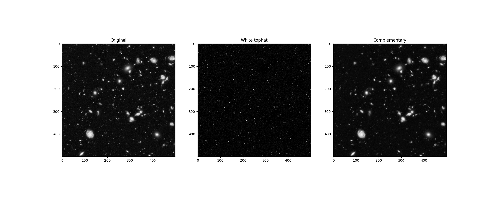

Source
SourceNote
Click here to download the full example code or to run this example in your browser via Binder
Removing small objects in grayscale images with a top hat filter¶
This example shows how to remove small objects from grayscale images. The top-hat transform [1] is an operation that extracts small elements and details from given images. Here we use a white top-hat transform, which is defined as the difference between the input image and its (mathematical morphology) opening.
import matplotlib.pyplot as plt
from skimage import data
from skimage import color, morphology
image = color.rgb2gray(data.hubble_deep_field())[:500, :500]
footprint = morphology.disk(1)
res = morphology.white_tophat(image, footprint)
fig, ax = plt.subplots(ncols=3, figsize=(20, 8))
ax[0].set_title('Original')
ax[0].imshow(image, cmap='gray')
ax[1].set_title('White tophat')
ax[1].imshow(res, cmap='gray')
ax[2].set_title('Complementary')
ax[2].imshow(image - res, cmap='gray')
plt.show()
Total running time of the script: ( 0 minutes 0.307 seconds)